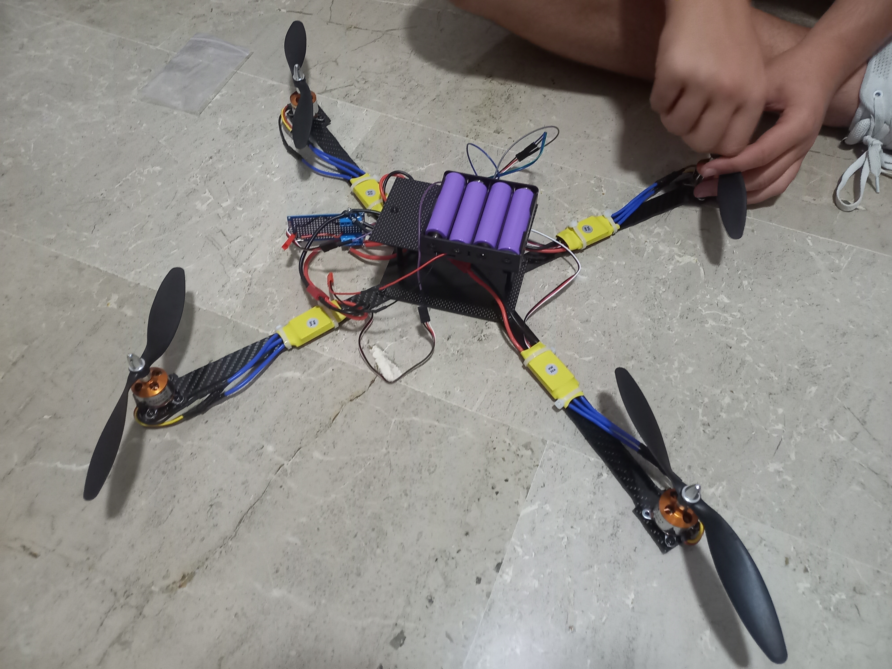

I see myself as someone who wants to live a meaningful life, doing what I enjoy while staying close to the people I care about.
I'm naturally curious and driven. Since I started programming, I've felt the need to understand how computers really work,
from the ground up. I try to stay away from empty distractions and focus on doing things that feel valuable and fulfilling.
In the long term, I want to keep learning and working toward more freedom and independence. Since I was 16, I've joked about
retiring at 30, but behind that joke, there's a real motivation to take control of my own path.
Who I am
Biography and Education
I was born in Algemesí, Spain, on April 20, 2001. I completed my secondary education at Colegio Santa Ana
in 2017 and earned my high school diploma at IES Bernat Guinovart in 2019, where I also started teaching
myself programming, a passion that quickly became central to my life.
In 2020, I took a gap year to focus on self-learning, dedicating my time to online courses and
personal projects, just as the global pandemic began.
During this period, I developed my first 3D game engine in C++, marking a major milestone in my journey as a developer.
I also joined the Handmade Hero community, which completely revolutionized my approach to problem-solving
and significantly accelerated my growth as a programmer.
From 2020 to 2022, I completed a Vocational Training program in Multiplatform
Application Development at IES Consuelo Aranda in Alberic.
In 2022, I started an internship at Cosmic Spell, contributing to the development of Soul Breach,
and I worked with the team for three years.
Alongside my full-time job, I successfully shipped a complete game built in my own game engine and continue
working on exciting personal projects to further deepen my knowledge of software development.
Programming Philosophy
In 2020, while developing Silver Engine, I discovered the Handmade Hero series. This experience led me to move away
from Object-Oriented Programming (OOP) and adopt a more procedural approach, which allowed me to grow significantly as a programmer.
My perspective was deeply influenced by developers like Casey Muratori and Jonathan Blow, who have become key references for me.
I focus on fundamental programming principles and strive to write the simplest code possible.
I firmly believe that SOLID principles and the "Clean Code" approach advocated by Robert C. Martin have, in many cases, done more harm than good.
My philosophy is: No OOP, no UML, no garbage collectors, no interpreted languages—just simple, straightforward, reliable, and high-performance software.
Although I primarily work with C++, which is known for being object-oriented, I restrict myself to using only functions and data structures. This approach makes memory management and program flow more coherent and explicit.
Despite my skepticism about OOP, I have successfully adapted to the development style of
Soul Breach, where we use C# and object-oriented programming.
Electronics
In 2023, I developed an interest in electronics as a hobby and built a remote-controlled car.
I am currently working on building a drone:
Sports
Since I was 15, I've been passionate about calisthenics. I've always believed it's worth investing time every day to stay
active and improve physical abilities.
I was also a member of a calisthenics club called Silver Barzz, a group of friends who traveled across Spain to connect with others who shared our passion for the sport.